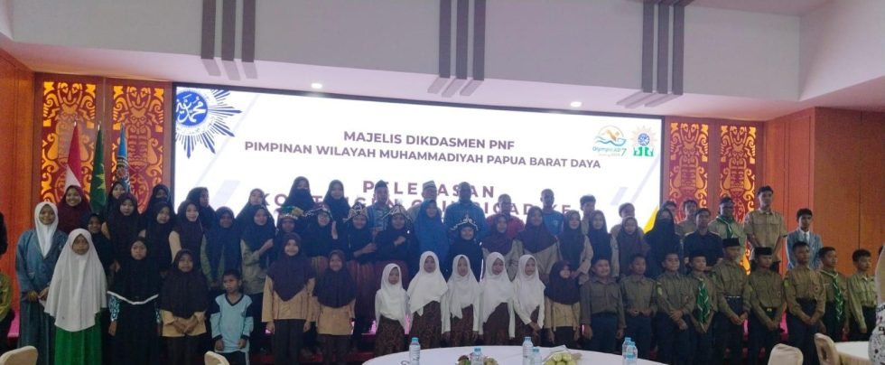
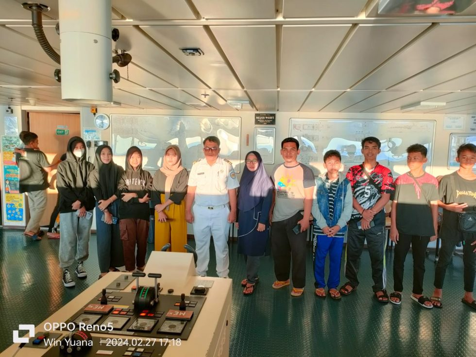

Social Media
Contact Us :
Majelis Dikdasmen PP Muhammadiyah
Artikel Majelis Dikdasmen PP Muhammadiyah
PENGUMUMAN ???????? Internasional Seminar Development and Educational Innovation Muhammadiyah in Cultivating the Character Of Generation Z in the era of Society 5.0 ???? Hari: Kamis, 7 Maret 2024 ???? Waktu: 08.00-18.00 ???? Tempat: Aula Ahmad Dahlan, Universitas...
Read More Sorong, -OLYMPICAD, Majelis Dikdasmen & PNF Pimpinan Wilayah Muhammadiyah Papua Barat Daya adakan pelepasan Kontingen Olympicad ke 7 yang akan dilaksanakan di Bandung pada 6 sd 8 Maret 2024 , Sebanyak 56 peserta, 25 pendamping
Read More Cerita OLYMPICAD_VII Selama berlayar menuju Jakarta dan melanjutkan ke Bandung untuk mengikuti OlympicAD ke-7, para peserta dari Kontingen OlympicAD ke-7 Papua Barat Daya tidak hanya menikmati perjalanan yang panjang di atas kapal, tetapi juga memanfaatkannya
Read MoreJakarta, OLYMPICAD . Ajang Olympicad ke-7 yang akan di selenggarakan di Bandung pada 6 sd 8 Maret 2024 , semakin memikat perhatian dengan tambahan cabang lomba baru yang mengundang minat para pelajar Muhammadiyah , yakni kompetisi E-sport Mobile Legends untuk...
Read MoreContact Us :